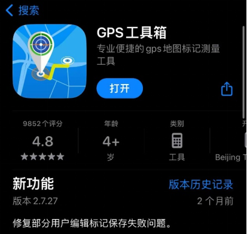
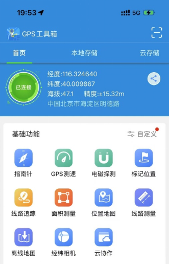
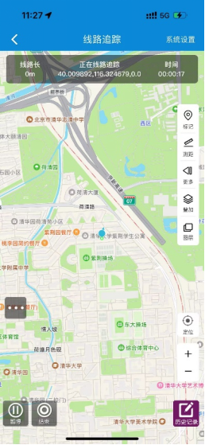
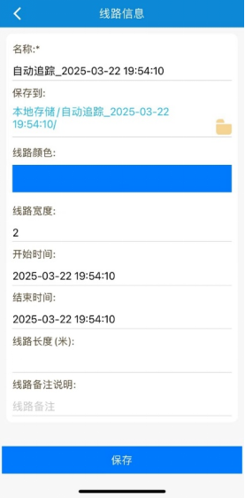

GPS 工具箱操作说明
本页用于实验期间记录每日活动路径。请在每天觉醒后开始记录，入睡前结束记录，并按要求上传 GPS 数据文件。
App：GPS 工具箱
功能：线路追踪
记录时间：觉醒后至入睡前
每天上传数据
⚠️ 必须操作：记录期间请不要退出 GPS 工具箱，也不要关闭定位权限。
若 App 被关闭、定位权限被禁用或系统后台限制过强，可能导致当天路径记录不完整。
若 App 被关闭、定位权限被禁用或系统后台限制过强，可能导致当天路径记录不完整。
操作总览
1
安装并注册
应用商城下载“GPS 工具箱”App，并按提示完成注册。
2
开始线路追踪
在首页选择“线路追踪”，每天觉醒后点击开始记录。
3
保持后台记录
记录期间不要退出 App，不要关闭定位权限。
4
结束并保存
入睡前结束记录，按要求命名并保存到本地。
5
系统设置
在系统设置中勾选“线路追踪去除手机静止时的点”。
1安装“GPS 工具箱”App，并完成注册展开
- 在手机应用商城搜索并下载 GPS 工具箱。
- 打开 App，并按提示完成注册或登录。
- 首次使用时，如系统请求定位权限，请选择允许。

2首页选择“线路追踪”，点击开始记录展开
- 进入 App 首页。
- 点击首页中的 线路追踪 功能。
- 每天觉醒后开始记录，入睡前结束记录。
- 记录期间不要退出 App，不要关闭定位权限。
建议开始记录后先检查地图界面是否已经显示正在记录状态。


3记录期间保持 App 和定位权限正常展开
- 记录期间尽量不要主动退出 GPS 工具箱。
- 不要关闭手机定位权限。
- 若系统提示后台运行、定位或电量优化限制，请尽量允许 App 继续运行。
- 如因手机重启、误关闭或权限异常导致记录中断，请在当日问卷中说明。
⚠️ 记录完整性取决于 App 是否持续运行。
若中途退出或定位权限关闭，可能导致当天 GPS 轨迹缺失。
若中途退出或定位权限关闭，可能导致当天 GPS 轨迹缺失。
4结束记录后保存到本地，并按要求命名展开
- 入睡前结束当天线路追踪。
- 结束记录后，线路信息会保存在本地。
- 文件名请包含被试编号和日期。建议格式：005_20260706G。
- 保存后按主页面上传入口，将当天 GPS 数据上传到团队。
若 App 内显示的默认名称类似“自动追踪_日期_时间”，请在保存或上传前改成主试要求的命名格式。

5注意事项：勾选“线路追踪去除手机静止时的点”展开
- 进入 GPS 工具箱的系统设置。
- 找到并勾选 “线路追踪去除手机静止时的点”。
- 实验期间保持此设置不变。
⚠️ 请确认已勾选“线路追踪去除手机静止时的点”。
该设置有助于减少静止状态下的冗余定位点，降低后续数据清理负担。
该设置有助于减少静止状态下的冗余定位点，降低后续数据清理负担。